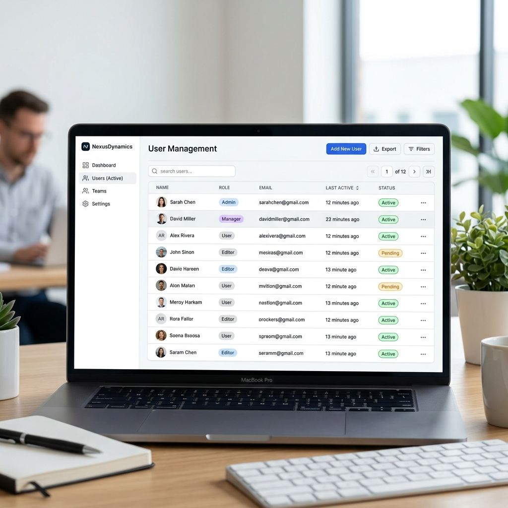

User Roles & Profiles
Managing system access and profiles.

The Authorization Hierarchy
Project Monitoring Tool enforces strict role-based access control to secure MSIL data.
- Admin: Full system access. Can approve pending users, change roles, and assign managers.
- DPM (Department Project Manager): Can view all projects and manage department users.
- SIC (Section In Charge): Can edit projects within their section.
- TL (Team Lead): Can edit projects managed by their team.
- PIC (Person In Charge): Can only update projects specifically assigned to them.
- Viewer: Read-only access to Dashboards and Gantt charts.
Managing Your Profile
Every user has a personal profile that dictates their identity across the system.
Click the Edit Profile button located in the bottom left corner of the Sidebar (under your name) to open the Profile Settings Modal.
Customizing Your Identity: In the Profile Modal, you can update your Name, Email, Password, and your official MSIL Staff Number. Most importantly, you can upload a custom Profile Photo which will instantly display in the sidebar and next to your name in the User Management list!